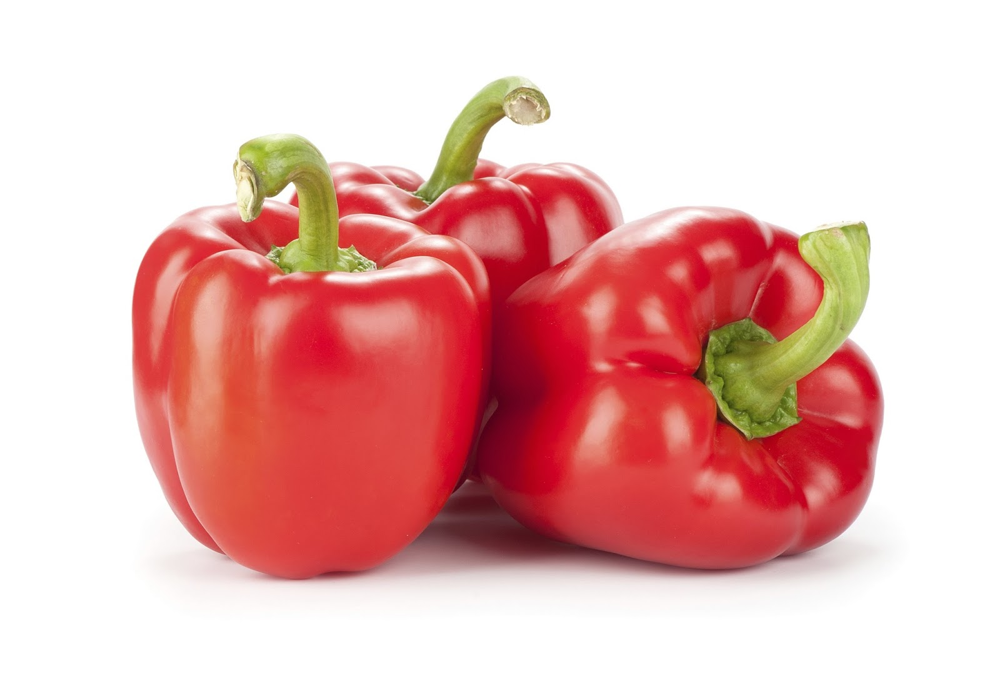
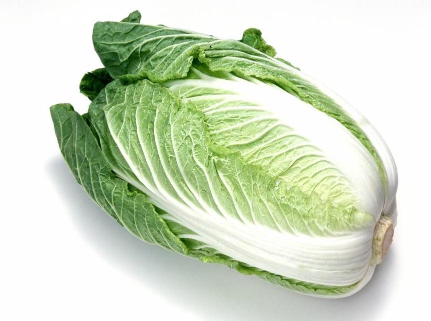
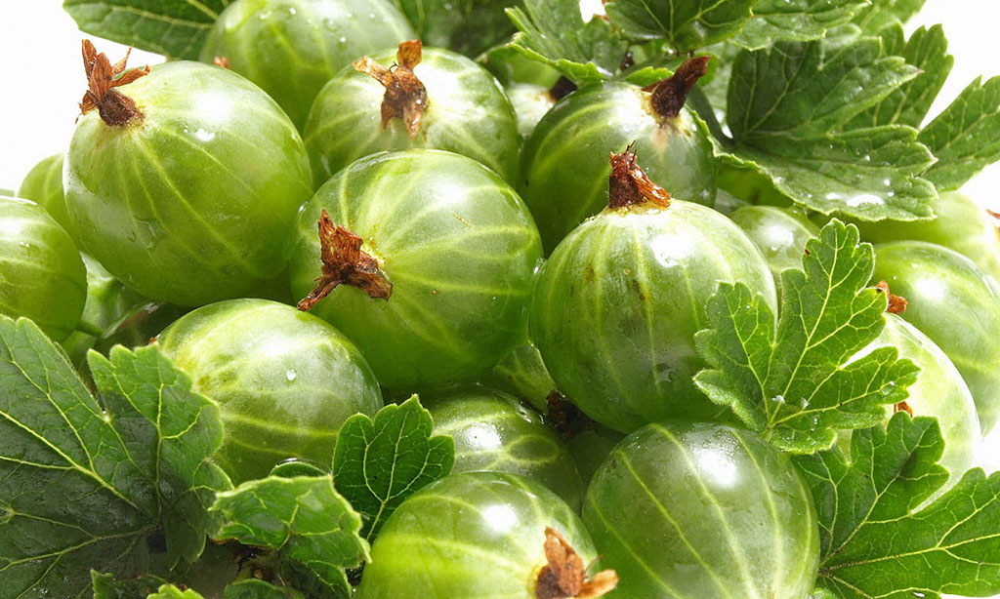
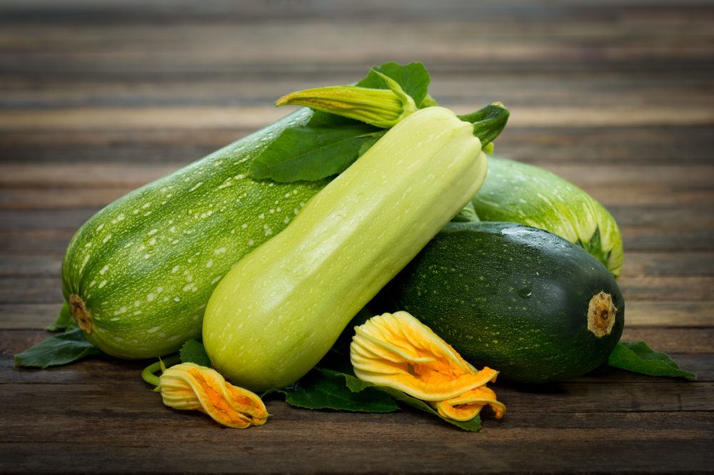
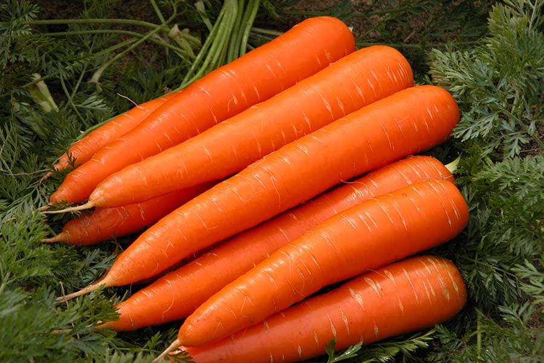
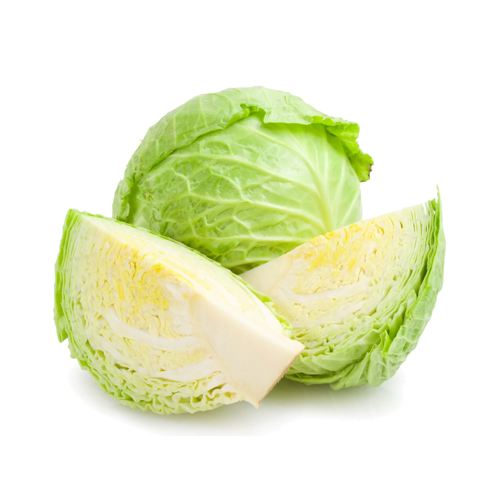
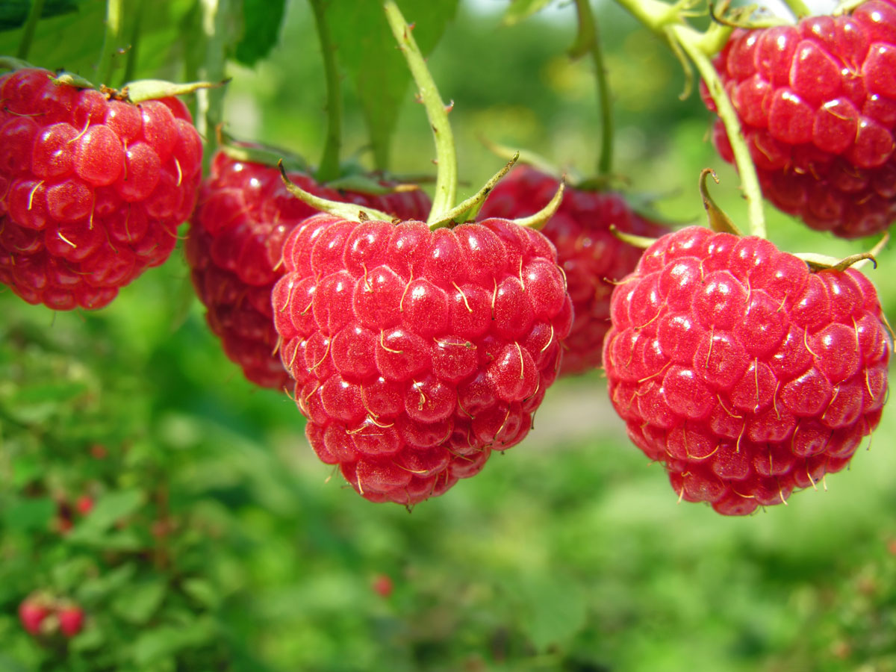
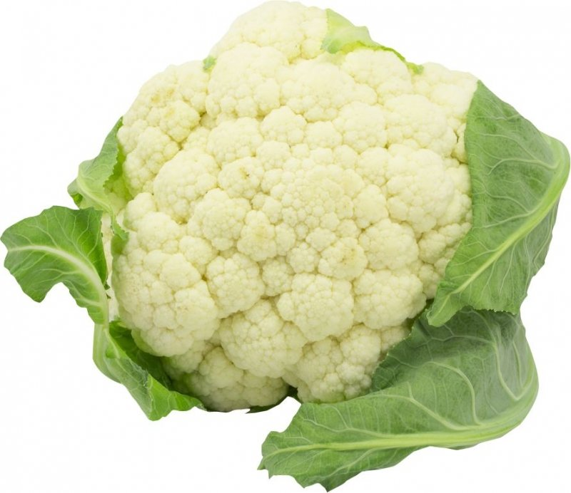
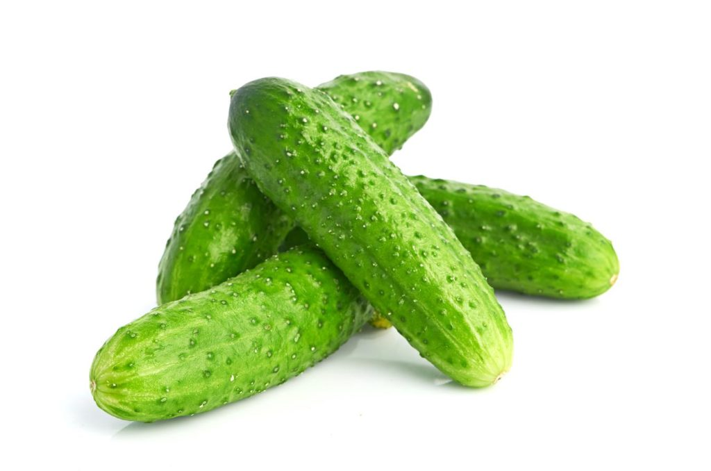
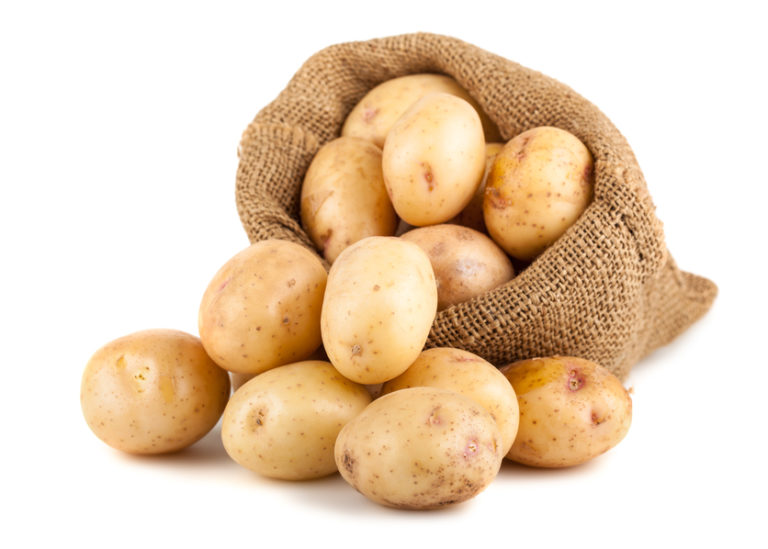

Перец — сладкий и сочный или жгучий, острый — желанный гость дачных огородов. Этот теплолюбивый овощ завоевал сердца дачников и поселился на участках в различных климатических зонах. Там, где сложно (а порой и невозможно) вырастить его в открытом грунте, огородники с успехом получают урожаи полезных плодов в теплицах. Яркие декоративные перчики украшают балконы и подоконники. Вкусный, полезный, красивый — это все о нем, о перце.

Впервые китайскую капусту стали выращивать в Китае, откуда она попала на Корейский полуостров, в Японию, Индокитай, а затем распространилась и по другим регионам. В России эта культура еще не так популярна, но уже полюбилась многим, кто ее приобрел в первый раз. Белые мясистые черешки и зеленая листва растения часто используются для приготовления различных блюд или употребляются в сыром виде в качестве закуски.

Крыжо́вник обыкнове́нный, или Крыжо́вник отклонённый, или Крыжо́вник европе́йский (лат. Ríbes úva-críspa) — вид растений семейства Крыжовниковые (Grossulariaceae), в настоящее время рассматриваемый в роде Смородина (Ribes).

Кабачок (уменьш. от укр. кабак, «тыква», из тюркских языков[2]) — кустовая разновидность тыквы обыкновенной с продолговатыми плодами, без плетей[3]. Плоды могут быть зелёного, жёлтого, чёрного или белого цвета. Мякоть нежная и быстроваркая[4], употребляется также и в сыром виде (в салатах).

Кабачок (уменьш. от укр. кабак, «тыква», из тюркских языков[2]) — кустовая разновидность тыквы обыкновенной с продолговатыми плодами, без плетей[3]. Плоды могут быть зелёного, жёлтого, чёрного или белого цвета. Мякоть нежная и быстроваркая[4], употребляется также и в сыром виде (в салатах).

Морковь посевная (лат. Daucus carota subsp. sativus) — двулетнее растение, подвид вида морковь дикая. Обычно в быту под словом «морковь» подразумевается широко распространенный корнеплод именно этого растения.

Капу́ста огоро́дная[2]:460 (лат. Brássica olerácea) — двулетнее растение, сельскохозяйственная культура; вид рода Капуста (лат. Brassica) семейства Капустные (Крестоцветные).
Мали́на обыкнове́нная (лат. Rúbus idáeus) — полукустарник; вид рода Рубус семейства Розовые (Rosaceae).
Растёт по вырубкам, лесам, кустарникам, берегам рек. Часто разводится в садах.

Мали́на обыкнове́нная (лат. Rúbus idáeus) — полукустарник; вид рода Рубус семейства Розовые (Rosaceae).
Растёт по вырубкам, лесам, кустарникам, берегам рек. Часто разводится в садах.

Цветна́я капу́ста (Brassica oleracea L. var. botrytis L.) — распространённая овощная культура, один из культурных сортов вида Капуста огородная. Относится к сортовой группе botrytis, как и романеско.

Огуре́ц обыкнове́нный, или Огурец посевно́й (лат. Cucumis sativus) — однолетнее травянистое растение, вид рода Огурец (Cucumis) семейства Тыквенные (Cucurbitaceae), овощная культура.
Карто́фель, или Паслён клубнено́сный (лат. Solánum tuberósum), — вид многолетних клубненосных травянистых растений из рода Паслён (Solanum) семейства Паслёновые (Solanaceae). Клубни картофеля являются важным пищевым продуктом. Плоды ядовиты, в связи с содержанием в них соланина.